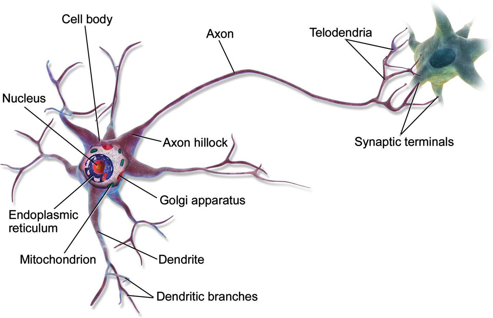
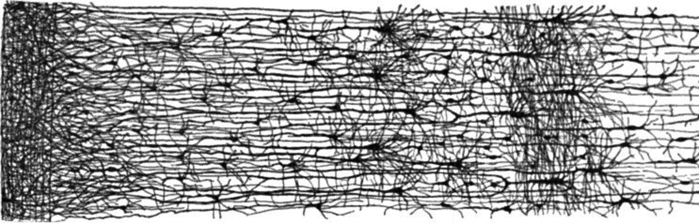
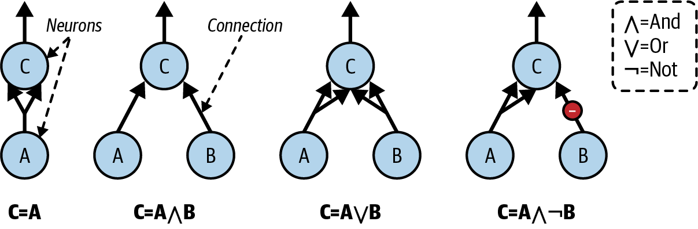
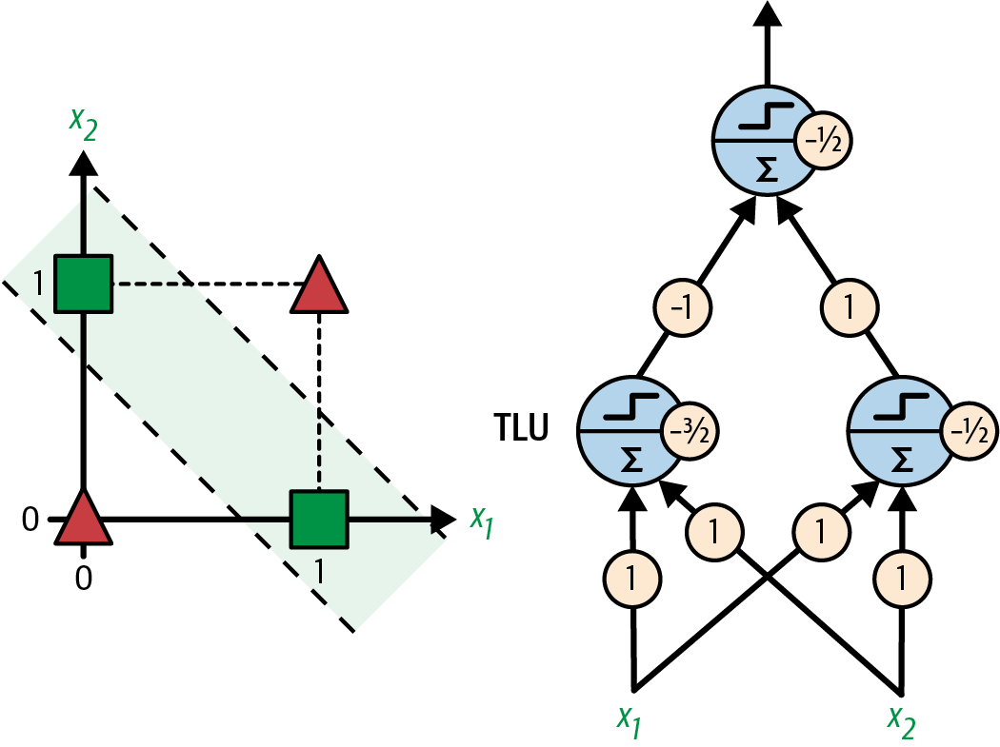
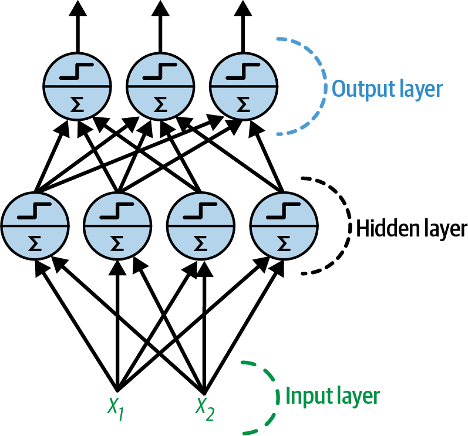
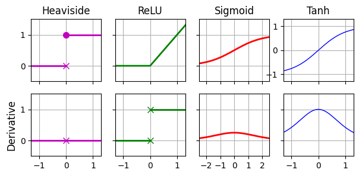
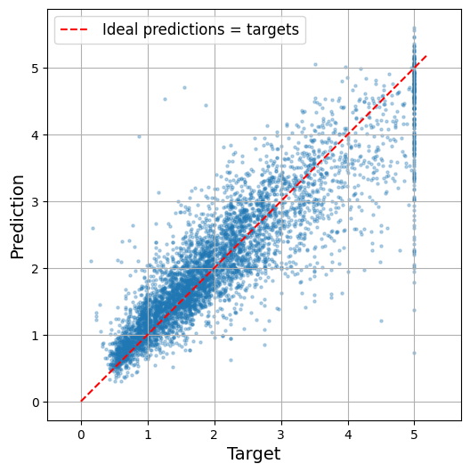
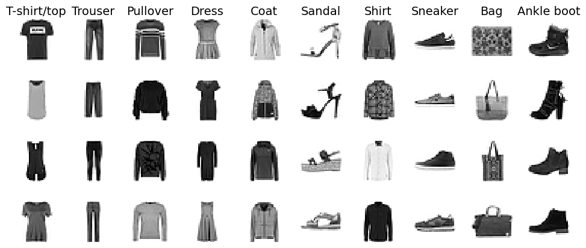

import matplotlib.pyplot as plt
plt.rc('font', size=14)
plt.rc('axes', labelsize=14, titlesize=14)
plt.rc('legend', fontsize=14)
plt.rc('xtick', labelsize=10)
plt.rc('ytick', labelsize=10)
3. Deep Learning
3.2 Artificial Neurons and the Perceptron
3.2.1 Biological Neurons
Before we discuss artificial neurons, let’s take a quick look at a biological neuron. It is an unusual-looking cell mostly found in animal brains. It’s composed of a cell body containing the nucleus and most of the cell’s complex components, many branching extensions called dendrites, plus one very long extension called the axon. The axon’s length may be just a few times longer than the cell body, or up to tens of thousands of times longer. Near its extremity the axon splits off into many branches called telodendria, and at the tip of these branches are minuscule structures called synaptic terminals (or simply synapses), which are connected to the dendrites or cell bodies of other neurons. Biological neurons produce short electrical impulses called action potentials (APs, or just signals), which travel along the axons and make the synapses release chemical signals called neurotransmitters. When a neuron receives a sufficient amount of these neurotransmitters within a few milliseconds, it fires its own electrical impulses (actually, it depends on the neurotransmitters, as some of them inhibit the neuron from firing).

Thus, individual biological neurons seem to behave in a simple way, but they’re organized in a vast network of billions, with each neuron typically connected to thousands of other neurons. Highly complex computations can be performed by a network of fairly simple neurons, much like a complex anthill can emerge from the combined efforts of simple ants. The architecture of biological neural networks (BNNs) is the subject of active research, but some parts of the brain have been mapped. These efforts show that neurons are often organized in consecutive layers, especially in the cerebral cortex (the outer layer of the brain).

3.2.2 Logical Computations with Neurons
McCulloch and Pitts proposed a very simple model of the biological neuron, which later became known as an artificial neuron: it has one or more binary (on/off) inputs and one binary output. The artificial neuron activates its output when more than a certain number of its inputs are active. In their paper, McCulloch and Pitts showed that even with such a simplified model it is possible to build a network of artificial neurons that can compute any logical proposition you want. To see how such a network works, let’s build a few ANNs that perform various logical computations, assuming that a neuron is activated when at least two of its input connections are active.

Let’s see what these networks do:
The first network on the left is the identity function: if neuron A is activated, then neuron C gets activated as well (since it receives two input signals from neuron A); but if neuron A is off, then neuron C is off as well.
The second network performs a logical AND: neuron C is activated only when both neurons A and B are activated (a single input signal is not enough to activate neuron C).
The third network performs a logical OR: neuron C gets activated if either neuron A or neuron B is activated (or both).
Finally, if we suppose that an input connection can inhibit the neuron’s activity (which is the case with biological neurons), then the fourth network computes a slightly more complex logical proposition: neuron C is activated only if neuron A is active and neuron B is off. If neuron A is active all the time, then you get a logical NOT: neuron C is active when neuron B is off, and vice versa.
You can imagine how these networks can be combined to compute complex logical expressions
3.2.3 The Perceptron
The perceptron is one of the simplest ANN architectures, invented in 1957 by Frank Rosenblatt. It is based on a slightly different artificial neuron called a threshold logic unit (TLU), or sometimes a linear threshold unit (LTU). The inputs and output are numbers (instead of binary on/off values), and each input connection is associated with a weight. The TLU first computes a linear function of its inputs: \(z = w_1 x_1 + w_2 x_2 + \cdots + w_n x_n + b = \mathbf{w}^T \mathbf{x} + b\). Then it applies a step function to the result: \(h_{\mathbf{w}}(x) = \text{step}(z)\). So it’s almost like logistic regression, except it uses a step function instead of the logistic function. Just like in logistic regression, the model parameters are the input weights \(\mathbf{w}\) and the bias term \(b\).

The most common step function used in perceptrons is the Heaviside step function. Sometimes the sign function is used instead.
Equation 1: Common step functions used in perceptrons (assumed threshold at zero)
\[ \text{Heaviside step function:} \quad \text{step}(z) = \begin{cases} 1 & \text{if } z \geq 0 \\ 0 & \text{if } z < 0 \end{cases} \]
\[ \text{Sign function:} \quad \text{sign}(z) = \begin{cases} 1 & \text{if } z > 0 \\ -1 & \text{if } z < 0 \\ 0 & \text{if } z = 0 \end{cases} \]
A single TLU can be used for simple linear binary classification. It computes a linear function of its inputs, and if the result exceeds a threshold, it outputs the positive class. Otherwise, it outputs the negative class. This may remind you of logistic regression. You could, for example, use a single TLU to classify iris flowers based on petal length and width. Training such a TLU would require finding the right values for \(w_1, w_2,\) and \(b\).
A perceptron is composed of one or more TLUs organized in a single layer, where every TLU is connected to every input. Such a layer is called a fully connected layer, or a dense layer. The inputs constitute the input layer. And since the layer of TLUs produces the final outputs, it is called the output layer. For example, a perceptron with two inputs and three outputs is represented as:

This perceptron can classify instances simultaneously into three different binary classes, which makes it a multilabel classifier. It may also be used for multiclass classification.
Thanks to the magic of linear algebra, the next equation can be used to efficiently compute the outputs of a layer of artificial neurons for several instances at once.
Equation 2: Computing the outputs of a fully connected layer
\[ \hat{\mathbf{Y}} = \phi(\mathbf{X} \mathbf{W} + \mathbf{b}) \]
In this equation:
- \(\hat{\mathbf{Y}}\) is the output matrix. It has one row per instance and one column per neuron.
- \(\mathbf{X}\) is the input matrix. It has one row per instance and one column per input feature.
- The weight matrix \(\mathbf{W}\) contains all the connection weights. It has one row per input feature and one column per neuron.
- The bias vector \(\mathbf{b}\) contains the bias term for each neuron. It has one entry per neuron.
- The function \(\phi\) is called the activation function: when the artificial neurons are TLUs, it is a step function (we will discuss other activation functions shortly).
So, how is a perceptron trained? Perceptrons are trained using a learning rule that takes into account the error made by the network when it makes a prediction; the perceptron learning rule reinforces connections that help reduce the error. More specifically, the perceptron is fed one training instance at a time, and for each instance it makes its predictions. For every output neuron that produced a wrong prediction, it reinforces the connection weights from the inputs that would have contributed to the correct prediction.
Equation 3: Perceptron learning rule (weight update)
\[ w_{ij} \leftarrow w_{ij} + \eta (y_j - \hat{y}_j) x_i \]
In this equation:
- \(w_{ij}\) is the connection weight between the \(i\)-th input and the \(j\)-th output neuron.
- \(x_i\) is the \(i\)-th input value of the current training instance.
- \(\hat{y}_j\) is the output of the \(j\)-th output neuron for the current training instance.
- \(y_j\) is the target output of the \(j\)-th output neuron for the current training instance.
- \(\eta\) is the learning rate.
The decision boundary of each output neuron is linear, so perceptrons are incapable of learning complex patterns (just like logistic regression classifiers). However, if the training instances are linearly separable, Rosenblatt demonstrated that this algorithm will converge to a solution. This is called the perceptron convergence theorem.
Scikit-Learn provides a Perceptron class that can be used pretty much as you would expect—for example, on the iris dataset:
import numpy as np
from sklearn.datasets import load_iris
from sklearn.linear_model import Perceptron
iris = load_iris(as_frame=True)
X = iris.data[["petal length (cm)", "petal width (cm)"]].values
y = (iris.target == 0) # Iris setosa
per_clf = Perceptron(random_state=42)
per_clf.fit(X, y)
X_new = [[2, 0.5], [3, 1]]
y_pred = per_clf.predict(X_new) # predicts True and False for these 2 flowersy_predarray([ True, False])The Perceptron is equivalent to a SGDClassifier with loss="perceptron", no regularization, and a constant learning rate equal to 1:
3.2.4 Multi-layer Perceptron
In their 1969 monograph, Perceptrons, Marvin Minsky and Seymour Papert highlighted a number of serious weaknesses of perceptrons—in particular, the fact that they are incapable of solving some trivial problems (e.g., the exclusive OR (XOR) classification problem). This is true of any other linear classification model (such as logistic regression classifiers), but researchers had expected much more from perceptrons, and some were so disappointed that they dropped neural networks altogether in favor of more formal approaches such as logic, problem solving, and search. The lack of practical applications also didn’t help.
It turns out that some of the limitations of perceptrons can be eliminated by stacking multiple perceptrons. The resulting ANN is called a multilayer perceptron (MLP). An MLP can solve the XOR problem: with inputs (0, 0) or (1, 1), the network outputs 0, and with inputs (0, 1) or (1, 0) it outputs 1.

An MLP is composed of one input layer, one or more layers of artificial neurons (originally TLUs) called hidden layers, and one final layer of artificial neurons called the output layer. The layers close to the input layer are usually called the lower layers, and the ones close to the outputs are usually called the upper layers.

Note: The signal flows only in one direction (from the inputs to the outputs), so this architecture is an example of a feedforward neural network (FNN).
When an ANN contains a deep stack of hidden layers, it is called a deep neural network (DNN). The field of deep learning studies DNNs, and more generally it is interested in models containing deep stacks of computations. Even so, many people talk about deep learning whenever neural networks are involved (even shallow ones).
3.2.4.1 Backpropagation
For many years researchers struggled to find a way to train MLPs, without success. In the early 1960s several researchers discussed the possibility of using gradient descent to train neural networks, but this requires computing the gradients of the model’s error with regard to the model parameters; it wasn’t clear at the time how to do this efficiently with such a complex model containing so many parameters, especially with the computers they had back then.
Then, in 1970, a researcher named Seppo Linnainmaa introduced in his master’s thesis a technique to compute all the gradients automatically and efficiently. This algorithm is now called reverse-mode automatic differentiation (or reverse-mode autodiff for short). In just two passes through the network (one forward, one backward), it is able to compute the gradients of the neural network’s error with regard to every single model parameter. In other words, it can find out how each connection weight and each bias should be tweaked in order to reduce the neural network’s error. These gradients can then be used to perform a gradient descent step. If you repeat this process of computing the gradients automatically and taking a gradient descent step, the neural network’s error will gradually drop until it eventually reaches a minimum. This combination of reverse-mode autodiff and gradient descent is now called backpropagation (or backprop for short).
Here’s an analogy: imagine you are learning to shoot a basketball into the hoop. You throw the ball (that’s the forward pass), and you observe that it went far off to the right side (that’s the error computation), then you consider how you can change your body position to throw the ball a bit less to the right next time (that’s the backward pass): you realize that your arm will need to rotate a bit counterclockwise, and probably your whole upper body as well, which in turn means that your feet should turn too (notice how we’re going down the “layers”). Once you’ve thought it through, you actually move your body: that’s the gradient descent step. The smaller the errors, the smaller the adjustments. As you repeat the whole process many times, the error gradually gets smaller, and after a few hours of practice, you manage to get the ball through the hoop every time. Good job!
Let’s run through how backpropagation works again in a bit more detail:
- It handles one mini-batch at a time, and goes through the full training set multiple times. If each mini-batch contains 32 instances, and each instance has 100 features, then the mini-batch will be represented as a matrix with 32 rows and 100 columns. Each pass through the training set is called an epoch.
- For each mini-batch, the algorithm computes the output of all the neurons in the first hidden layer. If the layer has 50 neurons, then its output is a matrix with one row per sample in the mini-batch (e.g., 32), and 50 columns (i.e., one per neuron). This matrix is then passed on to the next layer, its output is computed and passed to the next layer, and so on until we get the output of the last layer, the output layer. This is the forward pass: it is exactly like making predictions, except all intermediate results are preserved since they are needed for the backward pass.
- Next, the algorithm measures the network’s output error (i.e., it uses a loss function that compares the desired output and the actual output of the network, and returns some measure of the error).
- Then it computes how much each output layer parameter contributed to the error. This is done analytically by applying the chain rule (one of the most fundamental rules in calculus), which makes this step fast and precise. The result is one gradient per parameter.
- The algorithm then measures how much of these error contributions came from each connection in the layer below, again using the chain rule, working backward until it reaches the input layer. As explained earlier, this reverse pass efficiently measures the error gradient across all the connection weights and biases in the network by propagating the error gradient backward through the network (hence the name of the algorithm).
- Finally, the algorithm performs a gradient descent step to tweak all the connection weights and bias terms in the network, using the error gradients it just computed.
Warning: It is important to initialize all the hidden layers’ connection weights randomly, or else training will fail. For example, if you initialize all weights and biases to zero, then all neurons in a given layer will be perfectly identical, and thus backpropagation will affect them in exactly the same way, so they will remain identical. In other words, despite having hundreds of neurons per layer, your model will act as if it had only one neuron per layer: it won’t be too smart. If instead you randomly initialize the weights, you break the symmetry and allow backpropagation to train a diverse team of neurons.
In short, backpropagation makes predictions for a mini-batch (forward pass), measures the error, then goes through each layer in reverse to measure the error contribution from each parameter (reverse pass), and finally tweaks the connection weights and biases to reduce the error (gradient descent step).
3.2.4.2 Activation Functions
In order for backprop to work properly, Rumelhart and his colleagues made a key change to the MLP’s architecture: they replaced the step function with the sigmoid function. This was essential because the step function contains only flat segments, so there is no gradient to work with (gradient descent cannot move on a flat surface), while the sigmoid function has a well-defined nonzero derivative everywhere, allowing gradient descent to make some progress at every step. In fact, the backpropagation algorithm works well with many other activation functions, not just the sigmoid function. Here are two other popular choices:
The hyperbolic tangent function: \(\tanh(z) = \frac{e^z - e^{-z}}{e^z + e^{-z}}\). Just like the sigmoid function, this activation function is S-shaped, continuous, and differentiable, but its output value ranges from –1 to 1 (instead of 0 to 1 in the case of the sigmoid function). That range tends to make each layer’s output more or less centered around 0 at the beginning of training, which often helps speed up convergence.
The rectified linear unit (ReLU): \(\text{ReLU}(z) = \max(0, z)\). The ReLU function is continuous but unfortunately not differentiable at \(z = 0\) (the slope changes abruptly, which can make gradient descent bounce around), and its derivative is \(0\) for \(z < 0\). In practice, however, it works very well and has the advantage of being fast to compute, so it has become the default for most architectures. Importantly, the fact that it does not have a maximum output value helps reduce some issues during gradient descent
These popular activation functions and their derivatives are represented in the next figure. But wait! Why do we need activation functions in the first place? Well, if you chain several linear transformations, all you get is a linear transformation. For example, if \(f(x) = 2x + 3\) and \(g(x) = 5x – 1\), then chaining these two linear functions gives you another linear function: \(f(g(x)) = 2(5x – 1) + 3 = 10x + 1\). So if you don’t have some nonlinearity between layers, then even a deep stack of layers is equivalent to a single layer, and you can’t solve very complex problems with that. Conversely, a large enough DNN with nonlinear activations can theoretically approximate any continuous function.
from scipy.special import expit as sigmoid
def relu(z):
return np.maximum(0, z)
def derivative(f, z, eps=0.000001):
return (f(z + eps) - f(z - eps)) / (2 * eps)
max_z = 2.5
z = np.linspace(-max_z, max_z, 200)
fig, axes = plt.subplots(nrows=2, ncols=4, figsize=(7, 3))
axes[0, 0].plot([-max_z, 0], [0, 0], "m-", linewidth=2)
axes[0, 0].plot(0, 0, "mx", markersize=7)
axes[0, 0].plot(0, 1, "mo", markersize=7)
axes[0, 0].plot([0, max_z], [1, 1], "m-", linewidth=2)
axes[0, 0].set_title("Heaviside", fontsize=12)
axes[1, 0].plot(z, derivative(np.sign, z), "m-", linewidth=2)
axes[1, 0].plot(0, 0, "mx", markersize=7)
axes[1, 0].set_ylabel("Derivative", fontsize=12)
axes[0, 1].plot(z, relu(z), "g-", linewidth=2)
axes[0, 1].set_title("ReLU", fontsize=12)
axes[1, 1].plot([-max_z, 0], [0, 0], "g-", linewidth=2)
axes[1, 1].plot([0, max_z], [1, 1], "g-", linewidth=2)
axes[1, 1].plot(0, 0, "gx", markersize=7)
axes[1, 1].plot(0, 1, "gx", markersize=7)
axes[0, 2].plot(z, sigmoid(z), "r-", linewidth=2)
axes[0, 2].set_title("Sigmoid", fontsize=12)
axes[1, 2].plot(z, derivative(sigmoid, z), "r-", linewidth=2)
axes[0, 3].plot(z, np.tanh(z), "b-", linewidth=1)
axes[0, 3].set_title("Tanh", fontsize=12)
axes[1, 3].plot(z, derivative(np.tanh, z), "b-", linewidth=1)
for row in range(2):
for col in range(4):
axes[row, col].grid(True)
if row == 0:
axes[row, col].set_xticklabels([])
if col == 2:
axes[row, col].set_xlim(-max_z, max_z)
axes[row, col].set_xticks([-2, -1, 0, 1, 2])
else:
axes[row, col].set_xlim(-1.3, 1.3)
axes[row, col].set_xticks([-1, 0, 1])
if col != 0 and ((row, col) != (0, 3)):
axes[row, col].set_yticklabels([])
if (row, col) == (0, 3):
axes[row, col].set_ylim(-1.3, 1.3)
axes[row, col].set_yticks([-1, 0, 1])
else:
axes[row, col].set_ylim(-0.5, 1.5)
axes[row, col].set_yticks([0, 1])
plt.show()
OK! You know where neural nets came from, what the MLP architecture looks like, and how it computes its outputs. You’ve also learned about the backpropagation algorithm. It’s time to see MLPs in action!
3.2.4.3 Regression MLPs
How would you build an MLP for a regression task? Well, if you want to predict a single value (e.g., the price of a house, given many of its features), then you just need a single output neuron: its output is the predicted value. For multivariate regression (i.e., to predict multiple values at once), you need one output neuron per output dimension. For example, to locate the center of an object in an image, you need to predict 2D coordinates, so you need two output neurons. If you also want to place a bounding box around the object, then you need two more numbers: the width and the height of the object. So, you end up with four output neurons.
Scikit-Learn includes an MLPRegressor class, so let’s use it to build an MLP with three hidden layers composed of 50 neurons each, and train it on the California housing dataset. For simplicity, we will use Scikit-Learn’s fetch_california_housing() function to load the data. Let’s start by importing everything we will need:
from sklearn.datasets import fetch_california_housing
from sklearn.metrics import root_mean_squared_error
from sklearn.model_selection import train_test_split
from sklearn.neural_network import MLPRegressor
from sklearn.pipeline import make_pipeline
from sklearn.preprocessing import StandardScalerNext, let’s fetch the California housing dataset and split it into a training set and a test set:
housing = fetch_california_housing()
X_train, X_test, y_train, y_test = train_test_split(
housing.data, housing.target, random_state=42)Now let’s create an MLPRegressor model with 3 hidden layers composed of 50 neurons each. The first hidden layer’s input size (i.e., the number of rows in its weights matrix) and the output layer’s output size (i.e., the number of columns in its weights matrix) will adjust automatically to the dimensionality of the inputs and targets, respectively, when training starts. The model uses the ReLU activation function in all hidden layers, and no activation function at all on the output layer. We also set verbose=True to get details on the model’s progress during training:
mlp_reg = MLPRegressor(hidden_layer_sizes=[50, 50, 50], early_stopping=True,
verbose=True, random_state=42)Since neural nets can have a lot of parameters, they have a tendency to overfit the training set. To reduce this risk, one option is to use early stopping: when we set early_stopping=True, the MLPRegressor class automatically sets aside 10% of the training data and uses it to evaluate the model at each epoch (you can adjust the validation set’s size by setting validation_fraction). If the validation score stops improving for 10 epochs, training automatically stops (you can tweak this number of epochs by setting n_iter_no_change).
Now let’s create a pipeline to standardize the input features before sending them to the MLPRegressor. This is very important because gradient descent does not converge very well when the features have very different scales. We can then train the model! The MLPRegressor class uses a variant of gradient descent called Adam to minimize the mean squared error. It also uses a tiny bit of \(L_2\) regularization (you can control its strength via the alpha hyperparameter, which defaults to 0.0001):
pipeline = make_pipeline(StandardScaler(), mlp_reg)
pipeline.fit(X_train, y_train)Iteration 1, loss = 0.85190332
Validation score: 0.534299
Iteration 2, loss = 0.28288639
Validation score: 0.651094
Iteration 3, loss = 0.22884372
Validation score: 0.699782
Iteration 4, loss = 0.20746145
Validation score: 0.720468
Iteration 5, loss = 0.19649383
Validation score: 0.724839
Iteration 6, loss = 0.18928708
Validation score: 0.740084
Iteration 7, loss = 0.18132029
Validation score: 0.747406
Iteration 8, loss = 0.17556450
Validation score: 0.753945
Iteration 9, loss = 0.17190651
Validation score: 0.760500
Iteration 10, loss = 0.16687650
Validation score: 0.759213
Iteration 11, loss = 0.16329479
Validation score: 0.761907
Iteration 12, loss = 0.16054473
Validation score: 0.768950
Iteration 13, loss = 0.15690181
Validation score: 0.762699
Iteration 14, loss = 0.15630644
Validation score: 0.766003
Iteration 15, loss = 0.15712517
Validation score: 0.778464
Iteration 16, loss = 0.15155981
Validation score: 0.774237
Iteration 17, loss = 0.14957641
Validation score: 0.778361
Iteration 18, loss = 0.14728922
Validation score: 0.780102
Iteration 19, loss = 0.14536327
Validation score: 0.780951
Iteration 20, loss = 0.14563414
Validation score: 0.776231
Iteration 21, loss = 0.14425158
Validation score: 0.783802
Iteration 22, loss = 0.14417076
Validation score: 0.779485
Iteration 23, loss = 0.14505477
Validation score: 0.781090
Iteration 24, loss = 0.14213671
Validation score: 0.778097
Iteration 25, loss = 0.14193655
Validation score: 0.784260
Iteration 26, loss = 0.14049307
Validation score: 0.784079
Iteration 27, loss = 0.13866098
Validation score: 0.780657
Iteration 28, loss = 0.13808885
Validation score: 0.786546
Iteration 29, loss = 0.13754874
Validation score: 0.788277
Iteration 30, loss = 0.13686441
Validation score: 0.785461
Iteration 31, loss = 0.13801360
Validation score: 0.781712
Iteration 32, loss = 0.13660210
Validation score: 0.786355
Iteration 33, loss = 0.13560290
Validation score: 0.776844
Iteration 34, loss = 0.13509029
Validation score: 0.791536
Iteration 35, loss = 0.13429967
Validation score: 0.788331
Iteration 36, loss = 0.13504045
Validation score: 0.776982
Iteration 37, loss = 0.13304051
Validation score: 0.785589
Iteration 38, loss = 0.13274860
Validation score: 0.787238
Iteration 39, loss = 0.13230347
Validation score: 0.778374
Iteration 40, loss = 0.13260752
Validation score: 0.791206
Iteration 41, loss = 0.13076986
Validation score: 0.786876
Iteration 42, loss = 0.13270492
Validation score: 0.783576
Iteration 43, loss = 0.13024949
Validation score: 0.790473
Iteration 44, loss = 0.13194766
Validation score: 0.791439
Iteration 45, loss = 0.12960481
Validation score: 0.788517
Validation score did not improve more than tol=0.000100 for 10 consecutive epochs. Stopping.Pipeline(steps=[('standardscaler', StandardScaler()),
('mlpregressor',
MLPRegressor(early_stopping=True,
hidden_layer_sizes=[50, 50, 50], random_state=42,
verbose=True))])In a Jupyter environment, please rerun this cell to show the HTML representation or trust the notebook. On GitHub, the HTML representation is unable to render, please try loading this page with nbviewer.org.
Parameters
| steps | [('standardscaler', ...), ('mlpregressor', ...)] | |
| transform_input | None | |
| memory | None | |
| verbose | False |
Parameters
| copy | True | |
| with_mean | True | |
| with_std | True |
Parameters
| loss | 'squared_error' | |
| hidden_layer_sizes | [50, 50, ...] | |
| activation | 'relu' | |
| solver | 'adam' | |
| alpha | 0.0001 | |
| batch_size | 'auto' | |
| learning_rate | 'constant' | |
| learning_rate_init | 0.001 | |
| power_t | 0.5 | |
| max_iter | 200 | |
| shuffle | True | |
| random_state | 42 | |
| tol | 0.0001 | |
| verbose | True | |
| warm_start | False | |
| momentum | 0.9 | |
| nesterovs_momentum | True | |
| early_stopping | True | |
| validation_fraction | 0.1 | |
| beta_1 | 0.9 | |
| beta_2 | 0.999 | |
| epsilon | 1e-08 | |
| n_iter_no_change | 10 | |
| max_fun | 15000 |
And there you go, you just trained your very first MLP! It required 45 epochs, and as you can see, the training loss went down at each epoch. The validation score generally went up at each epoch. Like every regressor in Scikit-Learn, MLPRegressor uses the R2 score by default for evaluation—that’s what the score() method returns. The R2 score measures the ratio of the variance that is explained by the model. In this case, it reaches close to 80% on the validation set, which is fairly good for this task:
mlp_reg.best_validation_score_0.791536125425778Let’s evaluate the RMSE on the test set:
y_pred = pipeline.predict(X_test)
rmse = root_mean_squared_error(y_test, y_pred)
rmse0.5327699946812925We get a test RMSE of about 0.53, which is comparable to what you would get with a random forest classifier. Not too bad for a first try! The next figure plots the model’s predictions versus the targets (on the test set). The dashed red line represents the ideal predictions (i.e., equal to the targets): most of the predictions are close to the targets, but there are still quite a few errors, especially for larger targets.
plt.figure(figsize=(6, 6))
plt.scatter(y_test, y_pred, s=5, alpha=0.3)
plt.plot([0, 5.2], [0, 5.2], color='red', linestyle='--',
label="Ideal predictions = targets")
plt.axis("equal")
plt.xlabel("Target")
plt.ylabel("Prediction")
plt.legend(fontsize=12)
plt.grid()
plt.show()
Note that this MLP does not use any activation function for the output layer, so it’s free to output any value it wants. This is generally fine, but if you want to guarantee that the output is always positive, then you should use the ReLU activation function on the output layer, or the softplus activation function, which is a smooth variant of ReLU: \(\text{softplus}(z) = \log(1 + e^{z})\). Softplus is close to 0 when \(z\) is negative, and close to \(z\) when \(z\) is positive. Finally, if you want to guarantee that the predictions always fall within a given range of values, then you should use the sigmoid function or the hyperbolic tangent, and scale the targets to the appropriate range: 0 to 1 for sigmoid and –1 to 1 for tanh. Sadly, the MLPRegressor class does not support activation functions in the output layer.
Warning: Scikit-Learn does not offer GPU acceleration, and its neural net features are fairly limited. This is why we will switch to PyTorch. That said, it is quite convenient to be able to build and train a standard MLP in just a few lines of code using Scikit-Learn: it lets you tackle many complex tasks very quickly.
In general, the mean squared error is the right loss to use for a regression tasks, but if you have a lot of outliers in the training set, you may sometimes prefer to use the mean absolute error instead, or preferably the Huber loss, which is a combination of both. Unfortunately, MLPRegressor only supports the MSE loss.
The next table summarizes the typical architecture of a regression MLP.
| Hyperparameter | Typical Value |
|---|---|
| # hidden layers | Depends on the problem, but typically 1 to 5 |
| # neurons per hidden layer | Depends on the problem, but typically 10 to 100 |
| # output neurons | 1 per target variable |
| Activation function (hidden layers) | ReLU (most common) |
| Activation function (output layer) | None, or ReLU/softplus (if positive outputs) or sigmoid/tanh (if bounded outputs) |
| Loss function | Mean squared error (MSE), mean absolute error (MAE), or Huber loss |
All right, MLPs can tackle regression tasks. What else can they do?
3.2.4.4 Classification MLPs
MLPs can also be used for classification tasks. For a binary classification problem, you just need a single output neuron using the sigmoid activation function: the output will be a number between 0 and 1, which you can interpret as the estimated probability of the positive class. The estimated probability of the negative class is equal to one minus that number.
MLPs can also easily handle multilabel binary classification tasks. For example, you could have an email classification system that predicts whether each incoming email is ham or spam, and simultaneously predicts whether it is an urgent or nonurgent email. In this case, you would need two output neurons, both using the sigmoid activation function: the first would output the probability that the email is spam, and the second would output the probability that it is urgent. More generally, you would dedicate one output neuron for each positive class. Note that the output probabilities do not necessarily add up to 1. This lets the model output any combination of labels: you can have nonurgent ham, urgent ham, nonurgent spam, and perhaps even urgent spam (although that would probably be an error).
If each instance can belong only to a single class, out of three or more possible classes (e.g., classes 0 through 9 for digit image classification), then you need to have one output neuron per class, and you should use the softmax activation function for the whole output layer. The softmax function will ensure that all the estimated probabilities are between 0 and 1, and that they add up to 1, since the classes are exclusive. This is called multiclass classification.
Regarding the loss function, since we are predicting probability distributions, the cross-entropy loss (or x-entropy or log loss for short) is generally a good choice.

The next table summarizes the typical architecture of a classification MLP.
| Hyperparameter | Binary classification | Multiclass classification |
|---|---|---|
| # hidden layers | Typically 1 to 5 layers | Typically 1 to 5 layers |
| # output neurons | 1 | 1 per class |
| Output activation function | Sigmoid | Softmax |
| Loss function | Binary cross-entropy | Categorical cross-entropy |
As you might expect, Scikit-Learn offers an MLPClassifier class in the sklearn.neural_network package, which you can use for binary or multiclass classification. It is almost identical to the MLPRegressor class, except that its output layer uses the softmax activation function, and it minimizes the cross-entropy loss rather than the MSE. Moreover, the score() method returns the model’s accuracy rather than the R2 score. Let’s try it out.
We could tackle the iris dataset, but that task is too simple for a neural net: a linear model would do just as well and wouldn’t risk overfitting. So let’s instead tackle a more complex task: Fashion MNIST. This is a drop-in replacement of MNIST. It has the exact same format as MNIST (70,000 grayscale images of 28 × 28 pixels each, with 10 classes), but the images represent fashion items rather than handwritten digits, so each class is much more diverse, and the problem turns out to be significantly more challenging than MNIST. For example, a simple linear model reaches about 92% accuracy on MNIST, but only about 83% on Fashion MNIST. Let’s see if we can do better with an MLP.
First, let’s load the dataset using the fetch_openml() function. Note that the targets are represented as strings 0', '1', …, '9', so we convert them to integers:
from sklearn.datasets import fetch_openml
fashion_mnist = fetch_openml(name="Fashion-MNIST", as_frame=False)
targets = fashion_mnist.target.astype(int)The data is already shuffled, so we just take the first 60,000 images for training, and the last 10,000 for testing:
X_train, y_train = fashion_mnist.data[:60_000], targets[:60_000]
X_test, y_test = fashion_mnist.data[60_000:], targets[60_000:]Each image is represented as a 1D integer array containing 784 pixel intensities ranging from 0 to 255. You can use the plt.imshow() function to plot an image, but first you need to reshape it to [28, 28]:
X_sample = X_train[0].reshape(28, 28) # first image in the training set
plt.figure(figsize=(1,1)) # reduce the figure size
plt.imshow(X_sample, cmap="binary")
plt.axis('off') # remove the axis
plt.show()With MNIST, when the label is equal to 5, it means that the image represents the handwritten digit 5. Easy. For Fashion MNIST, however, we need the list of class names to know what we are dealing with. Scikit-Learn does not provide it, so let’s create it:
class_names = ["T-shirt/top", "Trouser", "Pullover", "Dress", "Coat",
"Sandal", "Shirt", "Sneaker", "Bag", "Ankle boot"]class_names[y_train[0]]'Ankle boot'n_rows = 4
plt.figure(figsize=(12, n_rows * 1.2))
for row in range(n_rows):
for class_index in range(10):
X_img = X_train[y_train==class_index][row].reshape(28, 28)
y_img = y_train[y_train==class_index][row]
plt.subplot(n_rows, 10, 10 * row + class_index + 1)
plt.imshow(X_img, cmap="binary", interpolation="nearest")
plt.axis('off')
if row == 0:
plt.title(class_names[y_img])
plt.subplots_adjust(wspace=0.2, hspace=0.5)
plt.show()
We’re ready to build the classification MLP:
from sklearn.neural_network import MLPClassifier
from sklearn.preprocessing import MinMaxScaler
from sklearn.pipeline import make_pipeline
mlp_clf = MLPClassifier(hidden_layer_sizes=[200, 100], verbose=True,
early_stopping=True, random_state=42)
pipeline = make_pipeline(MinMaxScaler(), mlp_clf)
pipeline.fit(X_train, y_train)
accuracy = pipeline.score(X_test, y_test)Iteration 1, loss = 0.57483807
Validation score: 0.849333
Iteration 2, loss = 0.39938584
Validation score: 0.856833
Iteration 3, loss = 0.35435272
Validation score: 0.869333
Iteration 4, loss = 0.32570927
Validation score: 0.863833
Iteration 5, loss = 0.30588352
Validation score: 0.874167
Iteration 6, loss = 0.29053832
Validation score: 0.874000
Iteration 7, loss = 0.27455976
Validation score: 0.879333
Iteration 8, loss = 0.26407281
Validation score: 0.878500
Iteration 9, loss = 0.25317835
Validation score: 0.882167
Iteration 10, loss = 0.24414312
Validation score: 0.892833
Iteration 11, loss = 0.23601645
Validation score: 0.890000
Iteration 12, loss = 0.23008384
Validation score: 0.887333
Iteration 13, loss = 0.22123722
Validation score: 0.885167
Iteration 14, loss = 0.21190658
Validation score: 0.879333
Iteration 15, loss = 0.20617121
Validation score: 0.892667
Iteration 16, loss = 0.19935674
Validation score: 0.891667
Iteration 17, loss = 0.19323595
Validation score: 0.891667
Iteration 18, loss = 0.19118498
Validation score: 0.893000
Iteration 19, loss = 0.18045888
Validation score: 0.892167
Iteration 20, loss = 0.17755098
Validation score: 0.890167
Iteration 21, loss = 0.17412956
Validation score: 0.894333
Iteration 22, loss = 0.16773934
Validation score: 0.894500
Iteration 23, loss = 0.16349204
Validation score: 0.893667
Iteration 24, loss = 0.16077870
Validation score: 0.889833
Iteration 25, loss = 0.14934062
Validation score: 0.893333
Iteration 26, loss = 0.14898857
Validation score: 0.888167
Iteration 27, loss = 0.14688411
Validation score: 0.891000
Iteration 28, loss = 0.14079827
Validation score: 0.886667
Iteration 29, loss = 0.14018731
Validation score: 0.887500
Iteration 30, loss = 0.13149282
Validation score: 0.893667
Iteration 31, loss = 0.13008545
Validation score: 0.893500
Iteration 32, loss = 0.12518664
Validation score: 0.892167
Iteration 33, loss = 0.12089552
Validation score: 0.895500
Iteration 34, loss = 0.11773432
Validation score: 0.893167
Iteration 35, loss = 0.11628895
Validation score: 0.890167
Iteration 36, loss = 0.11659955
Validation score: 0.894000
Iteration 37, loss = 0.11052450
Validation score: 0.894833
Iteration 38, loss = 0.10588123
Validation score: 0.890833
Iteration 39, loss = 0.10723340
Validation score: 0.893333
Iteration 40, loss = 0.10035025
Validation score: 0.892667
Iteration 41, loss = 0.09630797
Validation score: 0.885500
Iteration 42, loss = 0.09742254
Validation score: 0.896500
Iteration 43, loss = 0.09549099
Validation score: 0.892333
Iteration 44, loss = 0.08870345
Validation score: 0.894500
Iteration 45, loss = 0.08690074
Validation score: 0.884833
Iteration 46, loss = 0.08475217
Validation score: 0.893333
Iteration 47, loss = 0.08437929
Validation score: 0.892667
Iteration 48, loss = 0.08112109
Validation score: 0.890167
Iteration 49, loss = 0.08061024
Validation score: 0.891500
Iteration 50, loss = 0.07784474
Validation score: 0.894333
Iteration 51, loss = 0.07294891
Validation score: 0.893167
Iteration 52, loss = 0.07183896
Validation score: 0.889500
Iteration 53, loss = 0.07273444
Validation score: 0.890333
Validation score did not improve more than tol=0.000100 for 10 consecutive epochs. Stopping.This code is very similar to the regression code we used earlier, but there are a few differences:
- Of course, it’s a classification task so we use an
MLPClassifierrather than anMLPRegressor. - We use just two hidden layers with 300 and 100 neurons, respectively. You can try a different number of hidden layers, and change the number of neurons as well if you want.
- We also use a
MinMaxScalerinstead of aStandardScaler. We need it to shrink the pixel intensities down to the 0–1 range rather than 0–255: having features in this range usually works better with the default hyperparameters used byMLPClassifier, such as its default learning rate and weight initialization scale. You might wonder why we didn’t use aStandardScaler? Well some pixels don’t vary much across images; for example, the pixels around the edges are almost always white. If we used theStandardScaler, these pixels would get scaled up to have the same variance as every other pixel: as a result, we would give more importance to these pixels than they probably deserve. Using theMinMaxScaleroften works better than theStandardScalerfor images (but your mileage may vary). - Lastly, the
score()function returns the model’s accuracy.
accuracy0.891mlp_clf.best_validation_score_0.8965mlp_clf.score(X_test, y_test)0.8722You will find that the model reaches about 89.7% accuracy on the validation set during training (the exact value is given by mlp_clf.best_validation_score_), but it starts overfitting a bit toward the end, so it ends up at just 89.2% accuracy. When we evaluate the model on the test set, we get 87.2%, which is not bad for this task, although we can do better with other neural net architectures such as convolutional neural networks.
You probably noticed that training was quite slow. That’s because the hidden layers have a lot of parameters, so there are many computations to run at each iteration. For example, the first hidden layer has 784 × 300 connection weights, plus 300 bias terms, which adds up to 235,500 parameters! All these parameters give the model quite a lot of flexibility to fit the training data, but it also means that there’s a high risk of overfitting, especially when you do not have a lot of training data. In this case, you may want to use regularization techniques such as early stopping and \(L_2\) regularization.
Once the model is trained, you can use it to classify new images:
X_new = X_test[:15] # let's pretend these are 15 new images
mlp_clf.predict(X_new)array([9, 2, 1, 1, 0, 1, 4, 6, 5, 7, 4, 5, 8, 3, 4])All these predictions are correct, except for the one at index 12, which should be a 7 (sneaker) instead of a 8 (bag). You might want to know how confident the model was about these predictions, especially the bad one. For this, you can use model.predict_proba() instead of model.predict().
y_proba = mlp_clf.predict_proba(X_new)
y_proba[12]array([0., 0., 0., 0., 0., 0., 0., 0., 1., 0.])Hmm, that’s not great: the model is telling us that it’s 100% confident that the image represents a bag (index 8). So not only is the model wrong, it’s 100% confident that it’s right. In fact, across all 10,000 images in the test set, there are only 16 images that the model is less than 99.9% confident about, despite the fact that its accuracy is about 90%. That’s why you should always treat estimated probabilities with a grain of salt: neural nets have a strong tendency to be overconfident, especially if they are trained for a bit too long.
Still, getting 90% accuracy on Fashion MNIST is pretty good. You could get even better performance by fine-tuning the hyperparameters, for example using RandomizedSearchCV. However, the search space is quite large, so it helps to know roughly where to look.
3.2.5 Hyperparameter Tuning Guidelines
The flexibility of neural networks is also one of their main drawbacks: there are many hyperparameters to tweak. Not only can you use any imaginable network architecture, but even in a basic MLP you can change the number of layers, the number of neurons and the type of activation function to use in each layer, the weight initialization logic, the type of optimizer to use, its learning rate, the batch size, and more. What are some good values for these hyperparameters?
3.2.5.3 Learning Rate
The learning rate is a hugely important hyperparameter. In general, the optimal learning rate is about half of the maximum learning rate (i.e., the learning rate above which the training algorithm diverges). One way to find a good learning rate is to train the model for a few hundred iterations, starting with a very low learning rate (e.g., \(10^{-5}\)) and gradually increasing it up to a very large value (e.g., \(10\)). This is done by multiplying the learning rate by a constant factor at each iteration (e.g., by \((10 / 10^{-5})^{1 / 500}\) to go from \(10^{-5}\) to \(10\) in \(500\) iterations). If you plot the loss as a function of the learning rate (using a log scale for the learning rate), you should see it dropping at first. But after a while, the learning rate will be too large, so the loss will shoot back up: the optimal learning rate is often a bit lower than the point at which the loss starts to climb (typically about 10 times lower than the turning point). You can then reinitialize your model and train it normally using this good learning rate.
Tip: To change the learning rate during training when using Scikit-Learn, you must set the MLP’s warm_start hyperparameter to True, and fit the model one batch at a time using partial_fit(). Simply update the learning rate at each iteration.
3.2.5.4 Batch Size
The batch size can have a significant impact on your model’s performance and training time. The main benefit of using large batch sizes is that hardware accelerators like GPUs can process them efficiently, so the training algorithm will see more instances per second. Therefore, many researchers and practitioners recommend using the largest batch size that can fit in VRAM (video RAM, i.e., the GPU’s memory). There’s a catch, though: large batch sizes can sometimes lead to training instabilities, especially with smaller models and at the beginning of training, and the resulting model may not generalize as well as a model trained with a small batch size.
However, other research points have shown that it is possible to use very large batch sizes (up to 8,192), along with various techniques such as warming up the learning rate (i.e., starting training with a small learning rate, then ramping it up), to obtain very short training times, without any generalization gap.
So one strategy is to use a large batch size, possibly with learning rate warmup, and if training is unstable or the final performance is disappointing, then try using a smaller batch size instead.
3.2.5.5 Other Hyperparameters
Here are two more hyperparameters you can tune if you have the computation budget and the time:
Optimizer: Choosing a better optimizer than plain old mini-batch gradient descent (and tuning its hyperparameters) can help speed up training and sometimes reach better performance.
Activation Function: We discussed how to choose the activation function earlier: in general, the ReLU activation function is a good default for all hidden layers. In some cases, replacing ReLU with another function can help.
Tip: The optimal learning rate depends on the other hyperparameters—especially the batch size—so if you modify any hyperparameter, make sure to tune the learning rate again.
This concludes our introduction to artificial neural networks and their implementation with Scikit-Learn. In the next chapter, we will switch to PyTorch, the leading open source library for neural networks, and we will use it to train and run MLPs much faster by exploiting the power of graphical processing units (GPUs). We will also start building more complex models, with multiple inputs and outputs.
For Further Exploration
Check out these resources to deepen your understanding of neural networks and related concepts:
Neural Network Playground:
- This is a great tool to build your intuitions without writing any code (it was built by the TensorFlow team, but there’s nothing TensorFlow-specific about it; in fact, it doesn’t even use TensorFlow).
Videos:
Google ML Crash Course Readings:
References:
Disclaimer: Some of the material in this notebook is adapted from other sources. These references are provided for further reading and to acknowledge the original authors.
- Chapter 9 Hands-On Machine Learning with Scikit-Learn and PyTorch by Aurélien Géron, 1st edition